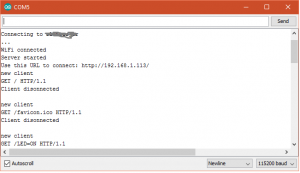
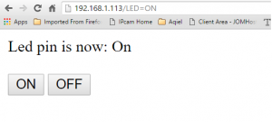

The best thing about ESP8266 is the web server feature. The chip enable wifi connectivity and can be turned into a small functioning web server. It can connect to the local wifi router and with some dydns configuration and port forwarding basically you can control your ESP8266 from the Internet.
This project will turn LED on and off through web server.
Project item
- Nodemcu v1
- LED
- 10k resistor
- jumper cable
Connection on breadboard
- D6 pin (nodemcu) –> resistor
- resistor to Anode (+) Led leg
- Cathode Led leg to ground(grn) pin (nodemcu).
Arduino IDE Code
#include <ESP8266WiFi.h> const char* ssid = "your-wifi-router-id"; const char* password = "your-wifi-password"; int ledPin = 12; // GPIO12 D6 WiFiServer server(80); void setup() { Serial.begin(115200); delay(10); pinMode(ledPin, OUTPUT); digitalWrite(ledPin, LOW); // Connect to WiFi network Serial.println(); Serial.println(); Serial.print("Connecting to "); Serial.println(ssid); WiFi.begin(ssid, password); while (WiFi.status() != WL_CONNECTED) { delay(500); Serial.print("."); } Serial.println(""); Serial.println("WiFi connected"); // Start the server server.begin(); Serial.println("Server started"); // Print the IP address Serial.print("Use this URL to connect: "); Serial.print("http://"); Serial.print(WiFi.localIP()); Serial.println("/"); } void loop() { // Check if a client has connected WiFiClient client = server.available(); if (!client) { return; } // Wait until the client sends some data Serial.println("new client"); while (!client.available()) { delay(1); } // Read the first line of the request String request = client.readStringUntil('\r'); Serial.println(request); client.flush(); // Match the request int value = LOW; if (request.indexOf("/LED=ON") != -1) { digitalWrite(ledPin, HIGH); value = HIGH; } if (request.indexOf("/LED=OFF") != -1) { digitalWrite(ledPin, LOW); value = LOW; } // Set ledPin according to the request //digitalWrite(ledPin, value); // Return the response client.println("HTTP/1.1 200 OK"); client.println("Content-Type: text/html"); client.println(""); // do not forget this one client.println("<!DOCTYPE HTML>"); client.println("<html>"); client.print("Led pin is now: "); if (value == HIGH) { client.print("On"); } else { client.print("Off"); } client.println("<br><br>"); client.println("<a href=\"/LED=ON\"><button>ON</button></a> <a href=\"/LED=OFF\"><button>OFF</button></a></p>"); client.println("</html>"); delay(1); Serial.println("Client disonnected"); Serial.println(""); }
Download code from github.
Press “control+shift+m” to bring the show serial monitor up. IP address of the web server should show on this monitor. If it is not please check your router information (r-id/password).
 Serial Moniter  Web Browser.Open a web browser and enter the ip addresses provided by the serial monitorHardware Setup.
Press on or off button. LED should turn on and off based on the button press.